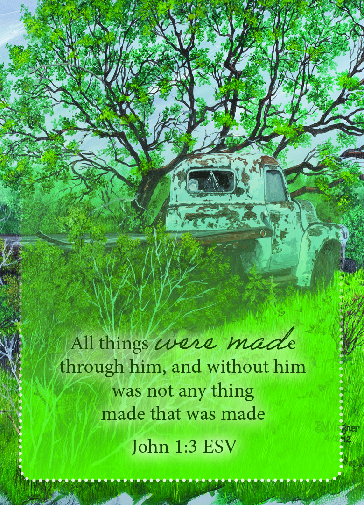

John 1:3 ESV
,

Pray the Scripture
Father God, I thank You for creating me. Your Word says You knew me before I was born, and knit in my mothers
whom. Your Word also says You choose me before You spoke Your breath into creation. How precious I am to You, that
You choose me before creating the very universe and everything in it. Thank You Lord You choose me to live for
You, and created in me a new heart, as Your Word says no one is good but Jesus, it is by His Blood & the cross
that I am now good, not by my works. Remind me just as the grass and the birds did nothing to deserve Your
provision & Your loving breath in them, I have done nothing to deserve Your grace & forgiveness. I am nothing
without You Lord. Thank You for never leaving me or forsaking me Lord, Remind me that You are the air I breath,
help me to breath You in today.
In The Name of Jesus Amen
Next Card
Back To Prayer Card List